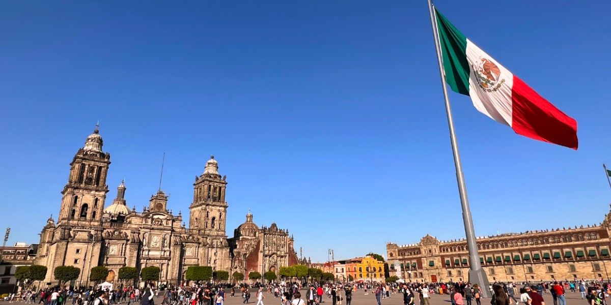

Mejor Gastranomía del Mundo
MÉXICO
- Sobre México
- Cultura Culinaria
- Ingredientes Destacados
- Tradiciones
- Recetas Tradicionales Peruanas
- Restaurantes Recomendados
Sobre México
Es el undécimo país más poblado del mundo, con una población de aproximadamente 118 millones de habitantes. La lengua materna es el español, que convive junto con 67 lenguas indígenas. México es una república representativa y democrática, conformada por estados libres, unidos por un pacto federal.  ReferenciaCultura Culinaria
Los invitamos a ver el siguiente video sobre Cultura Culinaria Mexicana
Los 5 ingredientes más usados en México
- Chile
- Maíz
- Frijoles
- Tomate
- Cilantro
Tradiciones de México
Día de la Virgen de Guadalupe:
El 12 de diciembre se celebra el día de la Virgen de Guadalupe, una festividad religiosa en la que se conmemora
la aparición de la Virgen a San Juan Diego en el Cerro del Tepeyac.
Día de Muertos:
El Día de Muertos es una de las tradiciones más emblemáticas de México. Se celebra los días 1 y 2 de noviembre, y es una ocasión
para honrar y recordar a los seres queridos que han fallecido. Durante esta festividad, se construyen altares con ofrendas y se visitan los cementerios.
Fiestas Patrias:
El 16 de septiembre se celebra el Día de la Independencia de México. Es una festividad llena de orgullo y patriotismo, en la que se conmemora
el inicio de la lucha por la independencia del país.
Restaurantes más Populares de México
- Pujol: Ubicado en la Ciudad de México, Pujol es considerado uno de los mejores restaurantes de México. Restaurante Pujol
- Sud 777: Este restaurante, liderado por el chef Edgar Núñez, se enfoca en la cocina vegetal mexicana. Restaurante Sud 777
- Rosetta: Dirigido por la chef Elena Reygadas, Rosetta es conocido por su enfoque en la comida artesanal mexicana. Restaurante Rosetta